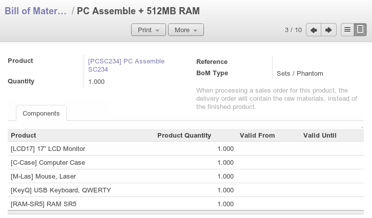
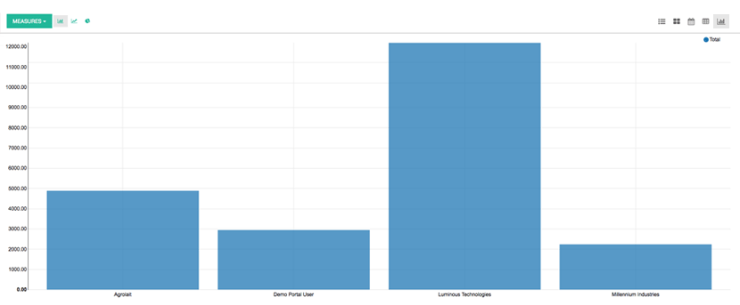

Get a seamless and effective manufacturing process by automatically scheduling orders based on procurement rules, quantity forecasts & dependent demand.
Define routings and plan the working time and capacity of your resources.
Quickly identify resource requirements and bottlenecks to ensure production meets delivery schedule dates.
Manually edit all operations at any stage in the process. With Odoo, you won't be frustrated by a rigid system. You can design specific templates for each operation and use the set of tools to find solutions for any issue. This open source software allows you to organize manufacturing orders and work orders in any way you like.
Process upcoming orders from the List view, control in the Calendar view and edit the proposed schedule in the Gantt view.
Have the flexibility to create multi-level bills of materials, optional routing, version changes and phantom bills of materials. You can use BoM for kits or for manufacturing orders.
Track the changes in stock value according to the level of manufacturing activities as it progresses through the transformation process.
Fully integrated with sales, purchases and inventory modules and programs to make manufacturing resource planning accurate. The accounting integration allows real time accounting valuation and deeper reporting on costs and revenues on your manufacturing operations.